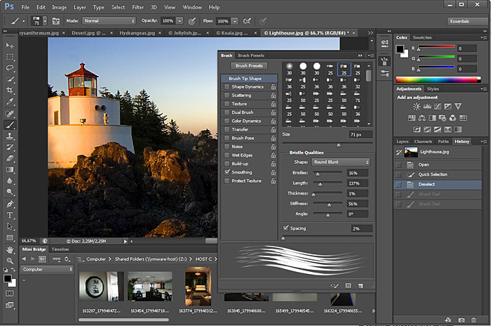
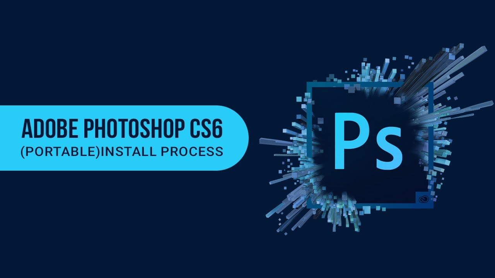

ພ້ອມແລ້ວສູ່ຄວາມແປກໃໝ່
ເລີ່ມຕົ້ນການຮຽນຮູ້ຂອງແຕ່ງຮູບພາບ ແລະ ການອອກແບບກຣາຟິກດີຊາຍທີ່ສວຍງາມທັນສະໄໝ
ຍິນດິຕ້ອນຮັບເຂົ້າສູ່ໜ້າເວັບບົດຮຽນໂຟ້ຊ້ອບ
ເລີ່ມຕົ້ນການຮຽນຮູ້ຂອງແຕ່ງຮູບພາບ ແລະ ການອອກແບບກຣາຟິກດີຊາຍທີ່ສວຍງາມທັນສະໄໝ
ຫຼື ການເປີດເຈ້ຍໃໝ່ ເຊິ່ງເປັນການສ້າງໄຟລ໌ເປົ່າ ເພື່ອນຳມາສ້າງເປັນຊິ້ນງານຕາມຕ້ອງການ ເຊິ່ງມີວິທີການ ແລະ ຂັ້ນຕອນດັ່ງນີ້:
1. ຄິກທີ່ເມນູ File
2.ຄິກ New
ຮູບທີ 67 ສະແດງຂັ້ນຕອນການຄິກສ້າງໄຟລ໌ໃໝ່
ຈະປະກົດໜ້າຕ່າງໃນການຕັ້ງຄ່າໜ້າເຈ້ຍໃໝ່ດັ່ງລຸ່ມນີ້:

ຮູບທີ 68 ສະແດງຂັ້ນຕອນການຕັ້ງຄ່າໜ້າເຈ້ຍໃໝ່
ສຳລັບວິທີການເປີດໄຟລ໌ຮູບພາບໃນ Photoshop cs6 ເພື່ອນຳໄປຕົບແຕ່ງ ແລະ ໃຊ້ງານຕໍ່ໄປນັ້ນ ສາມາດເລືອກເປີດໄຟລ໌ຮູບພາບທີ່ຕ້ອງການໄດ້ຫຼາຍວິທີ ແລ້ວແຕ່ຄວາມສະດວກ ແລະ ລັກສະນະການໃຊ້ງານ.

ຮູບທີ 69 ສະແດງຂັ້ນຕອນການເປີດເອົາໄຟລ໌ຮູບພາບ

ຮູບທີ 70 ສະແດງຂັ້ນຕອນການເລືອກເອົາໄຟລ໌ຮູບພາບ
ໝາຍເຫດ: ຖ້າຕ້ອງການເລືອກເອົາໄຟລ໌ຮູບພາບພ້ອມກັນຫຼາຍຮູບ ຖ້າໄຟລ໌ລຽນຕິດກັນແມ່ນໃຫ້ກົດປຸ່ມ Shift ຄ້າງໄວ້ແລ້ວເລືອກຮູບ ແຕ່ຖ້າໄຟລ໌ຮູບບໍ່ລຽນຕິດກັນໃຫ້ກົດ Cttrl ຄ້າງໄວ້ແລ້ວຄິກເລືອກຮູບພາບຕາມທີ່ຕ້ອງການ.
ໃນກໍລະນີທີ່ຕ້ອງການເປີດໄຟລ໌ຮູບທີ່ເຄີຍໃຊ້ງານອີກຄັ້ງ ກໍ່ສາມາດຄິກຕາມຂັ້ນຕອນຄື:
1. ຄິກທີ່ File
2. ແລ້ວຄິກທີ່ Open Recent

ຮູບທີ 71 ສະແດງຂັ້ນຕອນການເລືອກເອົາໄຟລ໌ຮູບພາບທີ່ໃຊ້ງານລ່າສຸດ
ເປັນອີກວິທີໜຶ່ງທີ່ວ່ອງໄວຄືການຄິກໃສ່ຮູບພາບທີ່ຕ້ອງການແລ້ວດຶງລາກມາວາງໃສ່ໃນໂປຮແກຣມ

ຮູບທີ 72 ສະແດງຂັ້ນຕອນການເລືອກເອົາໄຟລ໌ຮູບພາບໂດຍການດຶງລາກ
ເມື່ອສ້າງ ຫຼື ຕົບແຕ່ງຮູບພາບສຳເລັດແລ້ວ ຈຳເປັນຈະຕ້ອງບັນທຶກຮູບພາບເພື່ອໄວ້ໃຊ້ງານພາຍຫຼັງໄດ້ ໂດຍສາມາດເລືອກບັນທຶກໄຟລ໌ໄດ້ຫຼາຍຮູບແບບຂຶ້ນຢູ່ກັບຈຸດປະສົງການນຳໄປໃຊ້ງານ ບໍ່ວ່າຈະເປັນການບັນທຶກນຳໄປໃຊ້ກັບວຽກງານສື່ສິ່ງພິມ, ນໍາໄປໃຊ້ໃນເວບໄຊທ໌ ແລະ ການບັນທຶກຮູບພາບເພື່ອນຳກັບມາແກ້ໄຂໄດ້.
1. ຄິກທີ່ File
2. ເລືອກ Save


ຮູບທີ 73 ສະແດງຂັ້ນຕອນການເລືອກບັນທຶກໄຟລ໌ໄວ້ແກ້ໄຂພາຍຫຼັງ

ຮູບທີ 74 ສະແດງຂັ້ນຕອນການເລືອກບັນທຶກໄຟລ໌ຮູບແບບອື່ນໆ
ແລ້ວຈະປະກົດໜ້າຕ່າງ JPG Option ດັ່ງຮູບ

ຮູບທີ 75 ສະແດງຂັ້ນຕອນການປັບຄ່າໃນການບັນທຶກໄຟລ໌ຮູບແບບ JPG
ເພີ່ມເຕີມ: ເອັບເຟັກເລເຢີສະໄຕລ໌ ( Effect Layer Style ) ຈະໃຫ້ຜົນໄດ້ຮັບທີ່ຕ່າງກັນດັ່ງນີ້:
1. Bevel & Emboss : ສ້້າງຂອງອ໋ອບເຈັກໃຫ້ເບິ່ງເປັນ 3ມິຕິ ຄ້າຍຄືການແກະສະລັກ
2. Stroke : ໃສ່ເສັ້ນຂອບໃຫ້ກັບ
3. Inner Shadow : ສ້າງເງົາ
4. Inner Glow : ສ້າງຄ້າຍຄືກັບຝຸ່ນກະຈາຍອ້ອມຂ້າງໃນ
5. Pattern Overlay : ສ້າງສີສັນຄ້າຍກັບລາຍຜ້າ
6. Color Overlay : ໃສ່ສີທັບ
7. Gradient Overlay : ໄລ່ເສດສີ
8. Satin : ສ້າງສີສັນ
9. Outer Glow : ສ້າງຄ້າຍຄືກັບຝຸ່ນກະຈາຍອ້ອມຂ້າງນອກ
10. Drop Shadow : ສ້າງເງົາໄວ້ທາງຫຼັງ
ພ້ອມແລ້ວທີ່ຈະເຂົ້າການຕັດຕໍ່ຮູບພາບ ແລະ ການອອກແບບຕາມຄວາມຕ້ອງການທີ່ຈະດີຊາຍອອກມາໃນແບບຂອງເຮົາ